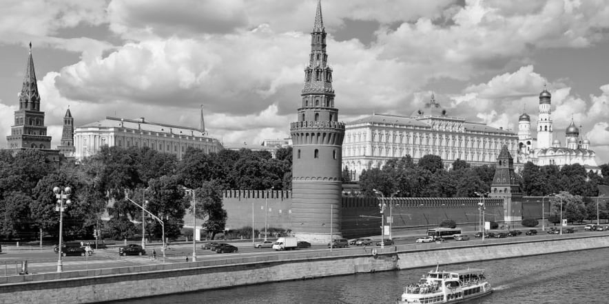

Пролетарии всех стран, соединяйтесь!
ПРАВДА
Газета основана
5 мая 1912 года
В. И. ЛЕНИНЫМ
Орган Центрального Комитета КПРФ
№142 (30060) • 24-25 декабря 2013 года • Цена свободная
Черноморский флот усилил защиту
Черноморский флот нарастил защиту своих пунктов базирования от атак украинских надводных и подводных дронов, сообщил командующий флотом вице-адмирал Виктор Соколов в интервью "Красной звезде" по случаю 240-летия ЧФ. По его словам, противник, лишенный возможности действий на море, сосредоточил усилия на проведении диверсионно-террористических атак по объектам флота и критической инфраструктуры на территории Крыма. "В связи с угрозой атак роботизированными надводными и подводными комплексами произведено наращивание технических средств защиты основного пункта базирования флота и мест стоянки кораблей, оборудованы посты оптико- электронного и радиотехнического наблюдения", — уточнил Соколов. Для усиления противовоздушной обороны пунктов базирования к боевому дежурству по ПВО, помимо штатных корабельных расчетов, привлекли дополнительные средства. Киевский режим регулярно пытается атаковать Крым. Так, 7 мая ВСУ ударили по Севастополю десятью беспилотниками, но российская ПВО отразила атаку.
Запад никогда не признает ошибочность санкций
Ни шагу назад
Москва, 12 мая. Западные страны никогда не признают, что ошиблись с введением антироссийских санкций, заявил пресс-секретарь президента Дмитрий Песков. "Они так не скажут", — ответил он журналистам на вопрос, "простит ли Россия коллективный Запад, если там предложат мир и перестанут вводить санкции, назвав их ошибочными". В то же время, по словам представителя Кремля, все большее число западных аналитиков склоняются к критической оценке.
Новый закон о госзакупках расширяет возможности для корупции
-2-я страница
Кому надо, чтобы Украину "майданило"
-3-я страница
Заветное слово в канун Нового года
-4-я страница
В 2014-й —
с большевистским оптимизмом!
Геннадий ЗЮГАНОВ, Председатель ЦК КПРФ
Завершается ещё один год, ставший для граждан страны временем нарастающих проблем и обманутых ожиданий. Фактически, это был период продолжения системного кризиса в России.
2013 год заканчивается под гром сражения за будущее страны. И происходит оно не между армиями. Битва эта идёт даже не внутри России. Судьбоносное сражение развернулось сегодня на улицах Киева. Ведь на самом деле происходящие там события — это не спор о выборе Украины между ассоциацией с ЕС и вступлением в Таможенный союз. Решается совсем иное: удастся ли бьющемуся в паутине кризиса
Западу подчинить себе и пожрать ресурсы братской республики или же русский и украинец найдут пути, чтобы сложить силы, выйти из кризиса и оградить свою землю от внешней экспансии. Для нашей партии отношения с Украиной и Белоруссией всегда были важнейшим приоритетом. Всё, что происходит сегодня на киевских
улицах, прямо связано с вопросом нашего общего исторического выживания. Мне никогда не забыть своё выступление десятилетней давности в Совете по международным отношениям в Нью-Йорке. Там были высокопоставленные представители всех служб госдепа США. Я был просто поражён,
когда один из них подошёл ко мне и, глядя в глаза, откровенно сказал: «Наша главная задача, чтобы вы никогда не сложили потенциалы с Украиной и Белоруссией». «Если вы складываете свои возможности, — пояснил мой собеседник, — вы снова превращаетесь в мировую державу». И его логика абсолютно
понятна. Интерес этих господ в том, чтобы беззастенчиво эксплуатировать украинские и российские природные ресурсы. Нам же отведена роль землепашцев и чернорабочих, обслуживающих нефтегазовую трубу, карьер и лесоповал. Допустить сближение России и Украины для мирового капитала